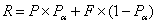
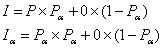
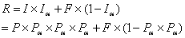
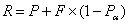
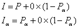
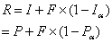
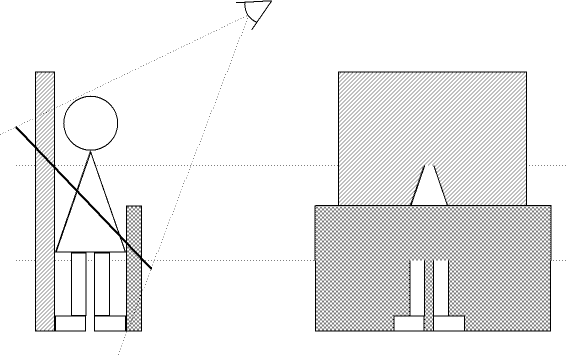

Impostors – Adding Clutter
Impostoring is a term that is probably not familiar to many reading this. However, the concept may be – it has surfaced in various forms many times in the history of 3D graphics. Simply put, it is about using sprites in a 3D scene, but instead of an artist drawing or rendering the sprites beforehand, they are updated on the fly by rendering triangles to them.
Instead of rendering a high-triangle object every frame, the high-triangle object is rendered to a texture only occasionally – usually on the order of once every five to fifty frames. But every frame this texture is mapped onto a much lower-triangle object and drawn.
The main target for impostors is scenes with lots of small static objects in them – clutter. Each of these objects will use an impostor, and most will be redrawn at a much lower rate than the main scene’s frame rate. By doing this, the perceived triangle density is far higher than the actual one, and the visual quality allowed by all these incidental objects considerably increases the realism of the scene. The main difference between an office or house in a computer game and the real thing is the amount of clutter present.
Although newer cards have huge triangle throughput, using impostors is still of great benefit. The bus bandwidth (in the case of the PC this is the AGP bus) is usually a bottleneck, and reducing this for some objects allows greater triangle detail to be used on others. An impostor is a single texture, whereas rendering the object normally may require multiple textures and multiple texture layers – changing texture flushes the texture cache and may require extra texture management from either the driver, the API, or the application. Drawing the object each frame requires that it be lit each frame, even if the lighting has not changed, and as lighting techniques become more sophisticated, lighting becomes more expensive. And finally there is usually plenty of application overhead when just thinking about drawing an object, even before a single API call is made – using impostors can avoid much of that work.
An impostor is essentially a color picture with an alpha channel that defines that picture's opacity in some way. Given that, there are basically two choices for this sort of blending - premultiplied alpha and "normal" blended alpha.
Normal alpha is the standard SRCALPHA:INVSRCALPHA style. The other style is premultiplied alpha - the ONE:INVSRCALPHA style.
Which one to use depends on which produces the correct result when rendering an alpha-blended object into an impostor, then rendering the impostor to the screen. So, a pixel P is rendered to an impostor texture (which is cleared to black) to produce an impostor pixel I, then that is rendered on top of the existing framebuffer pixel F, to produce result pixel R.
If using non-premultiplied alpha, the desired result is:

The render to the impostor produces the result:

And rendering this to the framebuffer produces:

This is pretty useless, and very little like the desired result. With premultiplied alpha, the desired result is:

The render to the impostor produces this result:

Rendering to the framebuffer produces this:

Which is perfect. Premultiplied alpha is not used by many apps, but it is fairly simple to adapt an existing engine to use it.
[additional note - see more about why premultiplied alpha is actually the Right Way to do things in my tech blog]
One thing to note is that it is now important to be precise about the alpha-channel result even when rendering opaque triangles, since the result will be written to the impostor, and will influence the result when the impostor is rendered to the screen. Non-alpha-blended (i.e. opaque) rendering to the impostor must ensure that the alpha result is 1, or the background will show through. Fortunately, this is fairly easy to do, but it does require more care with the alpha-channel result than is normally taken.
One problem with impostoring is that alpha-blend effects rendered into an impostor must be capable of expressing their effect within the premultiplied alpha scheme. This means that effects such as multiplicative color blends (basically, anything with a COLOR argument in the alpha-blend) will not work as intended, because the impostor has only a single alpha channel to express the amount of background to allow through. Fortunately, these sorts of effects are rarely used on objects that are suitable for impostoring. Note this only applies to actual translucent effects – opaque multi-pass rendering that uses alpha-blending to combine the passes (e.g. light maps, detail maps, etc) will be fine, as long as the final alpha-channel value is carefully controlled.
The most obvious way to render the impostor is to simply render a quad of the image where the impostored object is. This gives a perfect result as long as the neither the object nor the camera move.
Unfortunately, pixels are not all the app has to worry about in a 3D scene - there is also depth to consider. A quad can only represent a single plane of depth, but the object it is trying to represent covers multiple depths.
So for the quad, the app needs to decide what depth to draw it at. Unfortunately, for some of the most common applications, there is no single depth that is appropriate. As can be seen from Figure 1, our impostored hero is standing between two walls. Unfortunately, his feet are sticking through the near wall, and his head has vanished through the far wall. Not a wonderful result.
Quads are no good if the impostored object is going to be close to others. They may be quite good for flying objects that don't usually get too close to things though, such as aircraft in a flight simulation.

Figure 1: Side view and rendered view of a billboard impostor showing Z-buffer problems.
The next approximation is a bounding box. Instead of a quad, the object-space bounding box of the object is drawn, with the impostor texture projected on it. Because the bounding box is a real 3D object, its Z-buffer properties can be controlled far better than a screen-aligned quad. In particular, its Z-buffer properties are now independent of the camera position – they only depend on the object position and orientation, which is one less thing the app has to worry about.
Bounding boxes actually work quite well. Most things in everyday life fill their bounding boxes quite well, and artifacts from intersections between bounding boxes is surprisingly rare. Note that only the front or back of the bounding box is drawn. Either can be used, but I draw the front, because a lot of things fill their bounding boxes, so using the front side gives a parallax shift that is closer to the real object when the camera moves.
Although a bounding box is more complex than a quad, it's not much more complex - 12 tris is not going to break the triangle budget in a hurry now that typical scenes have hundreds of thousands of triangles. The increase in Z-buffering stability compared to a single quad is definitely worth the effort.
There are plenty of objects for which a bounding box is not a good enough approximation, and leads to unnecessary Z-buffer clashes. There is also another factor to consider in choosing the shape of the impostor – parallax error. The whole point of a 3D scene is that a camera can move through it, even if the objects in the scene are stationary. A box painted with a picture of something on it is not going to look like that something for long when the camera starts moving. Although increasing the rate at which the impostor is updated can help, this just burns pixel and triangle rates far faster for not all that much benefit - the eye very quickly notices the lack of parallax as it moves.
Using an impostor object that is closer to the real shape of the object, though still with a very low triangle count, can give a good improvement over a bounding box. The main restriction on the shape is that it needs to fully enclose the object, otherwise the impostor image may be bigger on-screen than the impostor object being used, and the edge of the image will not get drawn. The other restriction is that the object must usually be convex to prevent self-sorting problems, because the impostor texture is drawn with alpha blending.
One of the problems with the impostor object is that it must be both convex and larger than the thing it represents. The former is required to prevent pixels being rendered twice, and the latter to prevent any pixels not being rendered at all. However, this inevitably means that the parallax as the object rotates (or the camera moves) is not going to be correct, because the impostor object is bound to be larger than the image it represents. Using a higher-tri impostor object can help reduce this in the case of entirely convex source objects. However, for non-convex source objects, this does not noticeably improve matters – the impostor object must remain convex, and no amount of tris will allow it to match a concave object.
Another way to deal with this is to move the texture co-ordinates at each vertex each frame. The tri counts involved are fairly low, so a bit more work at each vertex is unlikely to hurt performance much. The principle is fairly simple – figure out where on the real object (and thus the impostor texture image) each impostor object’s vertex lies when viewed from a certain angle. As this viewing angle changes, the texel that the vertex lies over will change. So for a new viewing angle, trace the line from the viewer through the impostor object vertex to the original object. Then work out which texel this part of the object was originally drawn to, and set the UV co-ordinates of this vertex accordingly.
This is expensive and fiddly to implement. It also has loads of problem cases, such as the vertex raytrace falling down a visually insignificant "chasm" in the object and, because of the low density of vertices in the impostor object, producing large warps over the image. Another problem is what to do with vertices at the edge of the impostor object that do not map to any part of the real object at all – what happens to them? Some sort of interpolation seems to be needed from the visible edges of the object, out to these vertices. This is the sort of work that an app does not want to be doing at runtime, however few vertices it involves.
In practice what I have found to be far simpler, and works just fine, is to give each vertex a "parallax factor" – the number of image texels to move per degree of viewer movement. This is a factor usually tweaked by hand, and easily determines the vertex’s texel co-ordinates at runtime. This factor is only done once for each impostor object vertex, and hand-tweaking around eight to ten vertices per object does not take long.
Alternatively, to generate these parallax values automatically for moderately sensible objects, find the nearest real-object vertex to each bounding object vertex. This distance is then proportional to the parallax factor required (the actual value depends on exactly how the factor is applied to the UV values, which depends on how the texture is mapped to the impostor object). For "non-sensible" objects, such as highly irregular, spiky, holed, or multi-layered objects, it may still be better to hand-tweak them, since the "average" depth that needs to be used is probably not the one this method finds.
Even this simple method may not be possible because the objects are generated dynamically, for example through animation. In this case using a bounding cuboid and assuming an ellipsoid object inside works remarkably well for such a primitive approximation. It certainly works better than having no texture co-ordinate changes at all.
On each frame, for each impostor, the decision needs to be made whether or not to update it that frame. A number of factors contribute to this decision. In all these cases, some sort of screen-space error estimate is made for each factor, and the factors summed. If this sum is over a global factor (which may be static, object-specific in some way, or dynamic to try to maintain a certain frame rate), the impostor is updated.
Animation changes the appearance of the object, and at some point the error is going to grow too great. This can be quantified by some sort of delta between the animation frame the impostor was rendered with, and the desired frame. Doing this precisely requires the object to be animated each frame, even if an update is not needed. This can be quite a large part of the expense of rendering an object, and it is a good idea to try to avoid a complete animation step. The easiest way I have found is to do a pre-processing step on each animation and find the largest distance that any vertex moves during the animation. Divide by the length (in time) of the animation, and thus find a "maximum error per second" measure for the animation. This is easy to do in a brute-force way, and since it is a pre-processing step, this is perfectly reasonable.
Note that the human eye is absolutely superb at extracting humanoid movement from images just a few pixels high. Impostoring this motion, effectively reducing its effective frame rate, can be surprisingly noticeable, even at very slight levels. It is a good idea to have an extra bias on these animations that can place even more emphasis on them than simple mathematical screen-space error. This effectively rules out impostoring for anything but slight animations on distant objects.
If the lighting changes significantly on the object, it will need to be updated. Since lighting systems are extremely varied between 3D engines, this needs fairly engine-specific routines to decide what the equivalent screen-space error is. Lighting a point at the center of the object using the six cardinal normals and comparing RGB differences between the current conditions and those when the impostor was created gives a fairly good idea of how the lighting has changed. Multiplying this by object size and dividing by the distance from the camera then gives a rough screen-space error.
Changing the viewing angle is probably the most obvious factor that decides an impostor update. Note that what is important is the vector from the camera to the object in object space. This will change when the object rotates, and also when the camera moves, both of which are important. The camera’s direction of view is unimportant – unless an enormous field of view is used, the object does not change appearance much when the camera rotates, only when it moves.
As well as the direction from the object to the camera, the distance between the two is also important. Although it does not change the actual appearance of the object, as the camera moves directly towards the object, the impostor texture gets gradually enlarged. After a while, it becomes obvious that this is just an image that is being enlarged by bilinear filtering, and not a real polygonal object, and so needs updating. This update will render to a larger texture, and so give more detail.
Many games also have specific heuristics that can be used to tweak these update rates. A common one for FPS games is that objects near the center of the view are usually the ones the player is looking at. These should get a slight boost to their update rates by dropping the acceptable screen error.
For mouse-driven games such as god games and RTS games, a similar tweak can be made to objects underneath the mouse cursor, for exactly the same reasons.
A distinction can also be made between "scenery" and "important" objects. Items that are purely in the scene to create an ambience, but are not usually involved in the gameplay can be assigned a relatively large screen error. The player will not be examining them terribly closely – their attention is likely to be elsewhere. So these objects can be more wrong before the player notices the error.
The main efficiency hit on most cards is changing rendertarget. This causes flushing of many internal caches and states, and on some cards causes a flush of the entire rendering pipeline. The main efficiency aim is to minimize these changes. The best way to do this is to wait until the end of the current scene, batching up the required updates to the impostor textures, rather than doing them as they are needed. Use large rendertargets, and at the end of the scene, pick the emptiest rendertarget and render multiple impostor images to sub-regions of that texture.
The easiest way to cope with the problem of packing differently sized impostor sub-textures together is to use a quadtree structure within each rendertarget. By only allocating square power-of-two sized textures (a common hardware requirement anyway), and allocating square power-of-two sub-textures from it, it is fairly easy to get efficient packing.
When allocating a block of a certain size, it should be allocated as far down the quadtree as possible, i.e. in a node that is the correct size. If no node is the correct size, the smallest possible node should be split up to create it. This again prevents larger blocks being split up unnecessarily – they may be used later by a large impostor. Although this sounds expensive – having to scan the whole quadtree for the smallest node – in practice a lot of caching can be done, and it does not take a significant amount of time.
When updating an impostor, the current state of the object is rendered to the texture. This is then faded in over a few frames, and then preserved for a few frames more, before in turn being replaced by a newer render. This does mean that what is visible on-screen is always out of date.
This can be improved by doing some forward prediction of impostor state. The idea is to predict what the impostor is going to look like half-way through its lifetime. If an object is currently being updated every sixth frame, when updating the impostor, the state of the impostor (orientation, position, lighting, animation, etc) should be forward-predicted by three frames.
If the game in question is a space-flight sim, a flight sim or a car racing game, predicting forwards by six frames is fairly easy, and fairly reliable. Most of the objects in the world have decent amounts of momentum, and much of the time many of them are simply travelling in straight lines. Those not travelling in straight lines are probably not good candidates for impostoring in the first place. It should be reasonably simple to add some useful forward prediction onto games such as this.
However, with games such as first-person-shooters, objects in the world are basically split into two distinct categories – those that almost never move (walls, furniture, clutter), and those that move erratically (players). The movement of the players is notoriously hard to predict, and it is probably a waste of time trying to impostor players.
On the other hand, impostoring the scenery and furniture is a far more viable proposition. Prediction for them is trivial – they almost never move. And when they do move, they usually move under control of a player, i.e. erratically. The easiest thing is to simply disable impostoring for the duration of the movement.
For god games and Real Time Strategy (RTS) games, the problems are similar, but the movement of the camera is very different. It is usually a bird’s-eye view, and most of the time it is either static (while issuing orders to units), or moving at constant speed over the map to get to a different area. Small, erratic movements are rare, which is fortunate since these are extremely hard to predict. Prediction of moving objects can also be very useful in these games, since most of them are AI-controlled. Much of the time, the objects are either stationary or walking in straight lines to a destination, both of which are easy to predict. However, both camera movement and object movement can change abruptly, and when they do the best thing is to flag the impostor for an update very soon, or even to disable impostoring altogether for a moment.
Impostoring is useful when trying to draw scenes with lots of fairly static objects in them. The raw triangle count will overwhelm any bus and graphics device that tries to render them at top detail, and progressive mesh methods can only do a certain amount to reduce the workload – texture changes and animation are extremely difficult to reduce in this way.
Impostoring is most effective on static objects some distance from the camera. Introducing this sort of clutter into games increases the visual quality substantially, especially since each object is still a real independent 3D object and can still be interacted with by the player. It also allows key objects to be "hidden in plain sight" amongst a lot of other objects – something that has been extremely difficult to do with existing techniques and the limited number of objects available in a scene.
Even an implementation using a bounding box and some simple maths produces good results for the incidental objects that are currently missing from games, but produce far more realistic scenes. In some cases, impostors can also be used to accelerate existing scenes.
These hindsights were added in late 2006, but the above article was written in April 2001. Later that year, StarTopia was published, which contained an implementation of this impostor algorithm. It used a bounding-box cuboid as the impostor object, and computed the cuboid dynamically for animated objects. I did try computing the largest possible bbox offline, looking at all the possible animation of a character, but that produced some huge bboxes (for example, a "die" animation has the character stretching out and laying flat on the floor, creating a very large possible bbox). Because StarTopia's animation system was so simple, it was easy and quick to find the bbox. Note also that the bbox changes at the same rate as the impostor is updated, not at the framerate rendering speed.
All the heuristics mentioned here were used to determine update speed except the lighting one. Lighting in StarTopia does not change very quickly, so this seemed unnecessary. In practice I had a bunch of "tweak feactors" that weighted each variable, allowing me to play with the relative importances of animation, distance and viewing angle. I found impostors to be pleasingly resilient to viewing-angle changes, but trying to impostor animated objects was very difficult. Even at only ten pixels high, you can see animations not being updated properly. However, in a crowded station, it is worth the increase in speed. Though in practice StarTopia's AI routines frequently chewed up more processing time than the rendering.
So animated objects were hard to impostor, although having the preprocessed error factor per-anim is useful, as creatures that are fairly stationary (e.g. sitting or standing still while waiting) will get impostored. Also, there were some objects that were animated very slowly. For example, all the trees sway very slightly (apparently we had a a light breeze running through our space station?), and impostoring trees was one of the larger speedups. But the majority of objects that received impostoring were inanimate - mainly room furniture. In fact I forgot that some of those objects were also animated, but not with conventional boned animations (various computer terminals have moving displays), so you can see the impostoring working on those fairly easily.
There were also plenty of cases where impostoring didn't work. Some pieces of furniture were used by creatures sitting or walking into them (the Z-ray machine, bar tables and chairs), and obviously that didn't work when approximating the object with a bbox, even at long range. So there were plenty of cases where an object declared itself as not impostorable. There were others that were variable - a sleeping pod is impostorable while it is closed or fully open (waiting for a customer), but while a peep is walking into or out of it, neither the pod nor the peep can be impostored. So it is important for the object to be able to dynamically declare itself impostorable or not. Fortunately, these special cases did not take long to find and fix. Objects that were rare (such as some of the expensive statues) simply got no impostoring at all, since the chance of having more than one or two in view at any one time is slim, and it wasn't worth thinking too hard about where impostoring would or would not work.
I did no forward-prediction of animated objects. I tried it, but it didn't look any better, and it caused complications and didn't work in some cases (and when that happened, it looked worse).
Something mentioned in the text is updating objects near the cursor at a higher rate. I tried this, but in retrospect it's not a good idea. It is very visible that as the cursor moves over the scene, objects "pop" into a slightly higher-fidelity version of reality. This is actually how I did it the first way for purely practical reasons - the mouse-hit-checking is part of the drawing routine. So rather than try to separate out the hit-check from the drawing, just never impostor things under the mouse cursor. Except it looks bizarre, so I ended up separating them anyway.
In hindsight I should have known this. There are many tricks you can play if you know where the viewer is looking - dropping texture mipmap levels, using simplification, etc. And many people have tried many things like this and they never work. The problem is that your eyes are frequently not looking near your mouse cursor, or the centre of the screen, or anywhere sensible like that. So anything that assumes they are is going to look very odd.
A final thing not mentioned here, because it was added later, was depth of field. I had a bug where the texture size chosen for the impostor was slightly smaller than the actual number of screen pixels, making things in the distance slightly blurry. The lead artist saw this and said it was really clever and could I keep that depth-of-field effect in? I explained it was a bug and he explained that it wasn't a bug now, it was a feature. So it stayed. It is only a very very slight effect, but it does look kinda neat. Of course, only impostored things get this effect, so they may be standing besides something larger that is not impostored and is razor-sharp, but again the effect is very slight, so the constrast is not glaring.
The quadtree packing of rendertargets worked as-described, and it worked well.
Overall, impostoring gave a significant speedup to complex scenes in StarTopia. Significant, but not as large as I'd have liked - in practice around 25% for fairly complex scenes. There were three major reasons why.
First, we had well-disciplined artists who used polygons and textures wisely. This meant that most objects in the game had only a single texture and a few hundred triangles. So switching to an impostor with a single texture and twelve triangles (a cube) was not a large speed increase. There were significant overdraw benefits for translucent objects such as trees though - an impostor only hits each pixel once, whereas the original tree might have many overlapping polygons and hit each pixel multiple times.
Second, rendering to texture was annoyingly slow on even the best cards that StarTopia shipped on, which at the time were the GeForce2 and the Radeon7500 (then just called a "Radeon"). Many cards loathed render-to-texture and would crash or run absurdly slowly, which meant impostoring had to be turned off on them. Ironically, they were the cards it would have benefitted most, since one of the biggest advantages of impostoring is not having to relight vertices, and most of the cards used software lighting at the time. On the other hand, many of those cards did not have the texture memory required, either.
Finally, StarTopia's rendering system had to be somewhat abused to make impostors work. As this was late in the project, the rendering system was already somewhat cruftified (having been started on DX5 and incrementally updated for several years before I took it over). Several key gameplay features (such as mouse-hit checking) were tied closely to the rendering routines. Rather than removing these (probably adding bugs), where they were needed they simply called the rendering routine with a supression flag that did all the work, but prevented DrawIndexedPrimitive from being called. Obviously, this was sub-optimal. As with the shadowbuffering that I added even later, starting an engine knowing you are going to add features like this is always going to produce a better result than retrofitting.